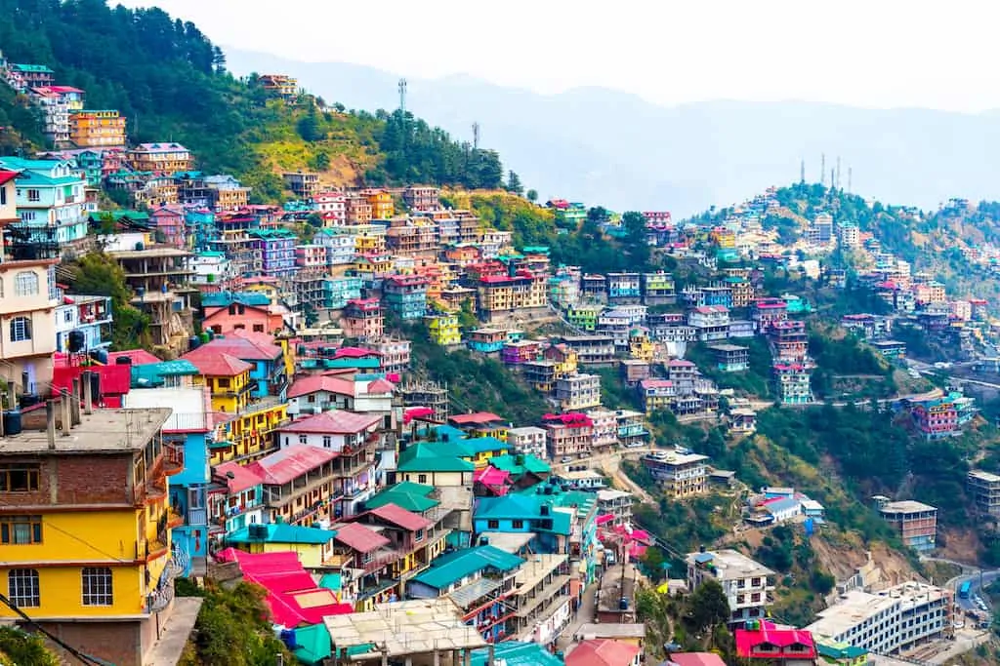
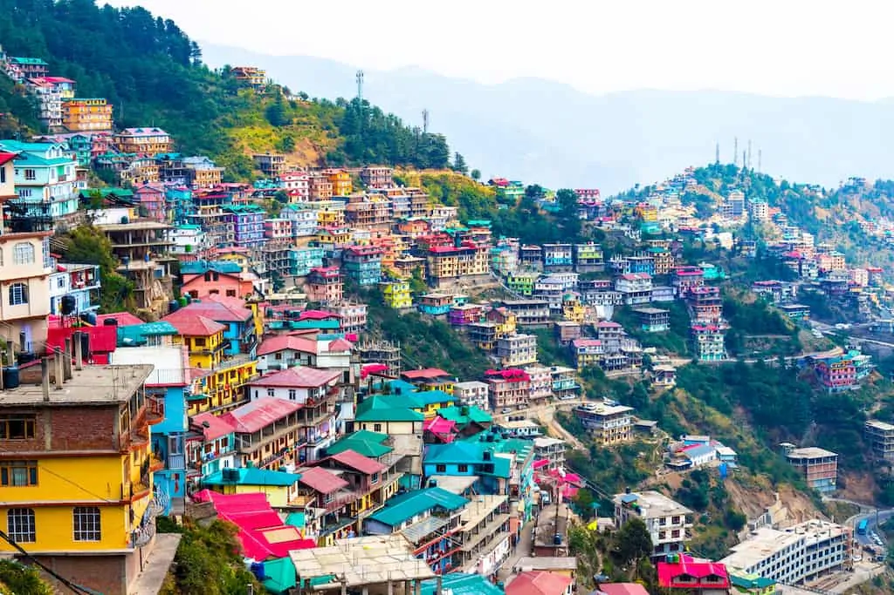

INDIA


 
‘The Mall’ is the main shopping street and the hub of the city where tourists and locals like to meet, shop and eat. This area also has a good number of clubs and bars great for those looking to step it up a gear.')">